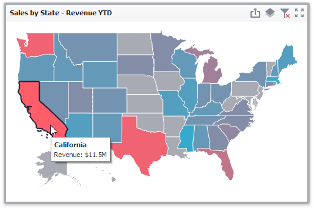
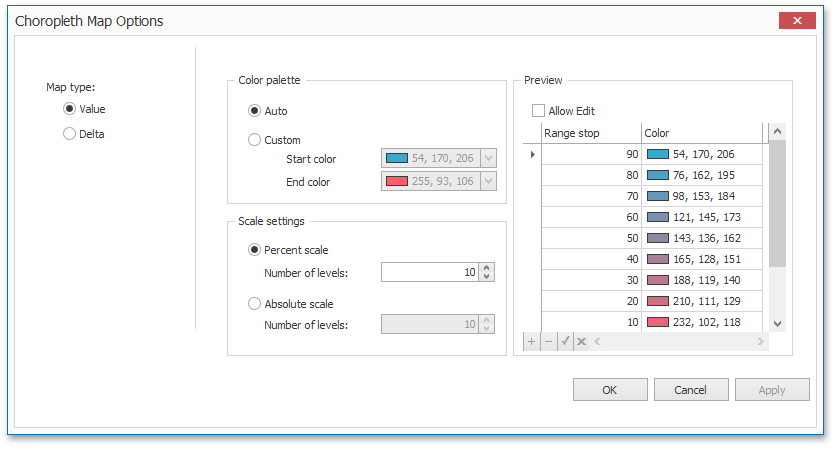

Map Coloring
The Choropleth Map dashboard item colors map shapes depending on the data provided.
For instance, you can visualize a sales amount or population density.

Palette and Scale Settings
The Choropleth Map automatically selects palette and scale settings to color map shapes.
If you need to customize these settings, click the Options button next to the data item that contains these values.

This invokes the Choropleth Map Options dialog.

You can specify the following settings in this window.
- Color palette - allows you to specify the start and end color of the palette.
- Scale settings - specifies whether a percent scale or an absolute scale is used to define a set of colors. You can specify the number of levels that represent the number of colors used to color the map.
- Preview is used to display a full set of palette colors generated based on the start/end colors and the number of levels. Use the Allow Edit check box to automatically change the generated colors or specify value ranges for each color.
To learn how to display a map legend, see Legend.
Also, the Choropleth Map allows you to visualize the difference between the actual and target values of a particular parameter. To learn more, see the Delta topic.